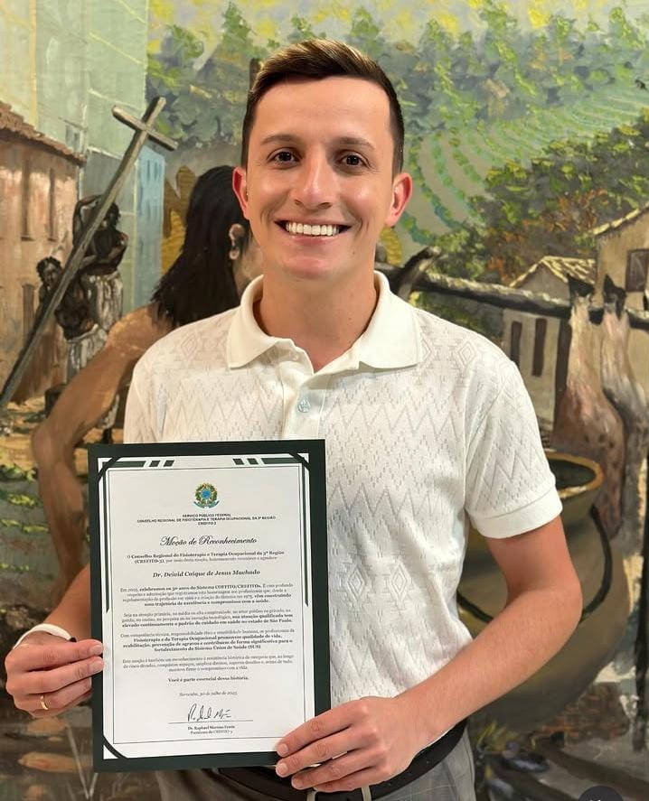

Terapia Ocupacional Especializada
Cuidado e carinho para o desenvolvimento do seu filho.
Na Clínica Afeto, focamos na autonomia e qualidade de vida através de um atendimento humanizado.

Dr. Deivid Caique
Terapeuta Ocupacional | CREFITO 3